Реальное важнее идеального
Кадр без ретуши, запись без пропусков. Идеальных недель не существует — существуют продолженные.
Field Notes · выпуск №01 — обновляется ежедневно
Мы не продаём мотивацию — мы ведём протокол. Каждая сессия записана: вес на штанге, время под нагрузкой, качество сна, приёмы пищи. То, что нельзя измерить, сюда не попадает.
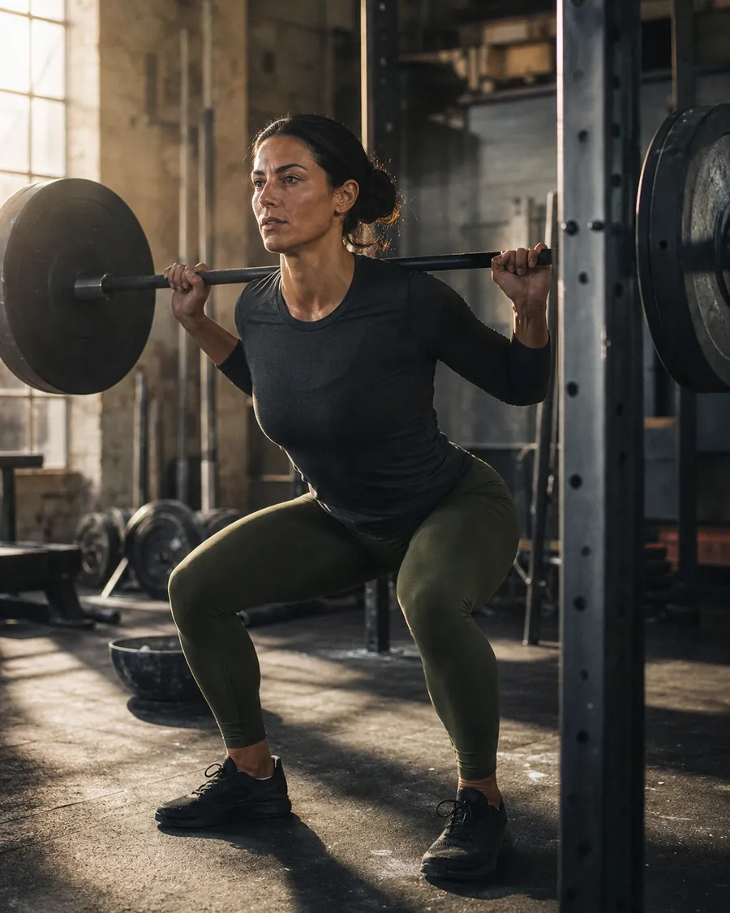
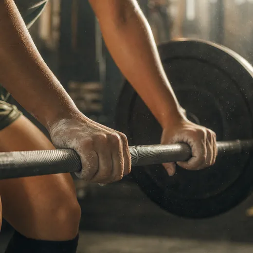
01 — Манифест
Никаких постеров, стоковых фраз и «до/после». Только то, что повторяется в понедельник утром.
Лента отфильтрованной мотивации превращается в дневник реальных сессий: кто-то тянет 142 кг, кто-то просто вышел на 4 км. Обе записи весят одинаково.
«Форма — побочный эффект. Главный продукт — привычка, которую видно в календаре.»
@ishotgirls · поле 12
Кадр без ретуши, запись без пропусков. Идеальных недель не существует — существуют продолженные.
Мы не ждём вдохновения. Сессия стоит в календаре так же жёстко, как встреча с клиентом.
Тоннаж, повторы, сон, шаги. Если это нельзя назвать числом — это не попадает в дневник.
Никаких обещаний «минус 10 кг за 30 дней». Работа читается в теле, а не в подписи к фото.
02 — Формат
Дневник работает, пока в нём есть цифры. Всё остальное — оформление.
Сессия, тоннаж, самочувствие. Запись занимает меньше минуты и не требует ни вдохновения, ни настроения.
Программа дня приходит в 06:00 и повторяется у всех 47 профилей — так появляется эффект группы.
Простые блюда на неделю: рецепт, раскладка по белку, список покупок. Без 3 000-калорийных смузи.
Тоннаж, сон, стрик. Сразу видно, где провал и что менять на следующей неделе.
Заметка
Запись дня занимает 41 секунду — быстрее, чем сторис.
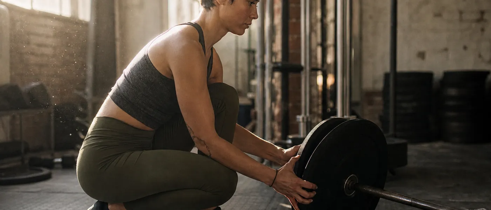
03 — Ростер
Каждый профиль — открытый дневник. Фильтруйте по дисциплине и смотрите, как выглядит регулярность.
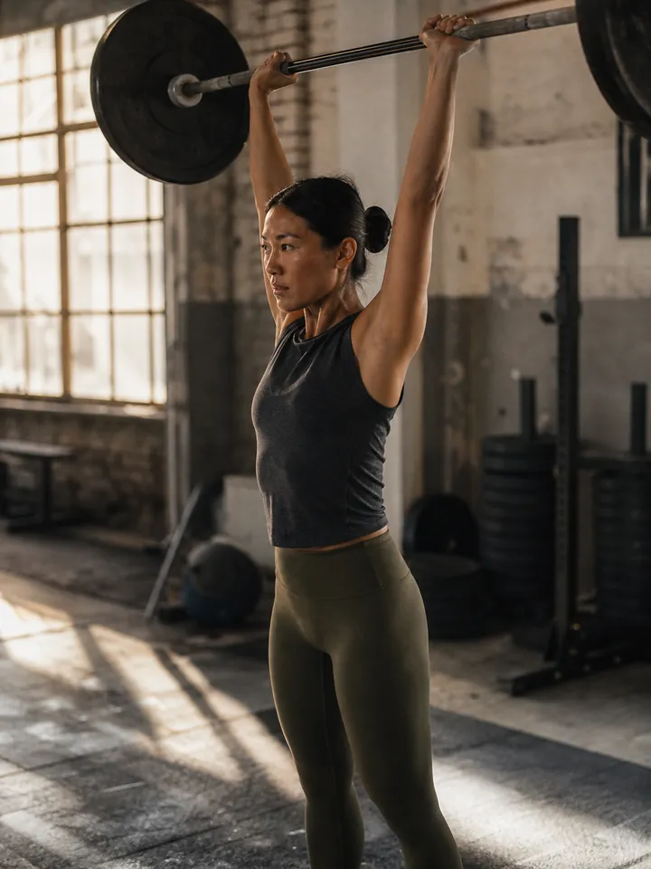
Профиль месяца · A01
Три года назад пришла за прессом. Осталась за протоколом: четыре сессии в неделю, жим стоя, ни одной пропущенной записи с января. Тренируется до работы — в зале в шесть утра её узнают по разминке.
«Пришла за прессом — осталась за дисциплиной. Пресс, кстати, тоже появился.»
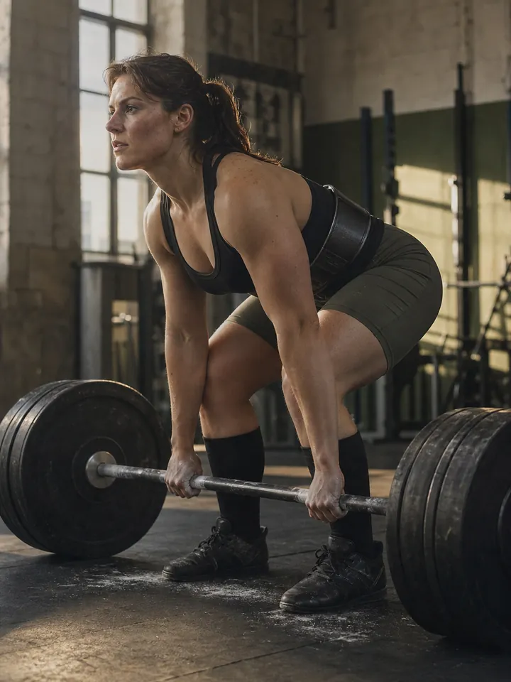
Тяга, присед, жим. Зал на районе, тренер — тетрадь с 2019 года.
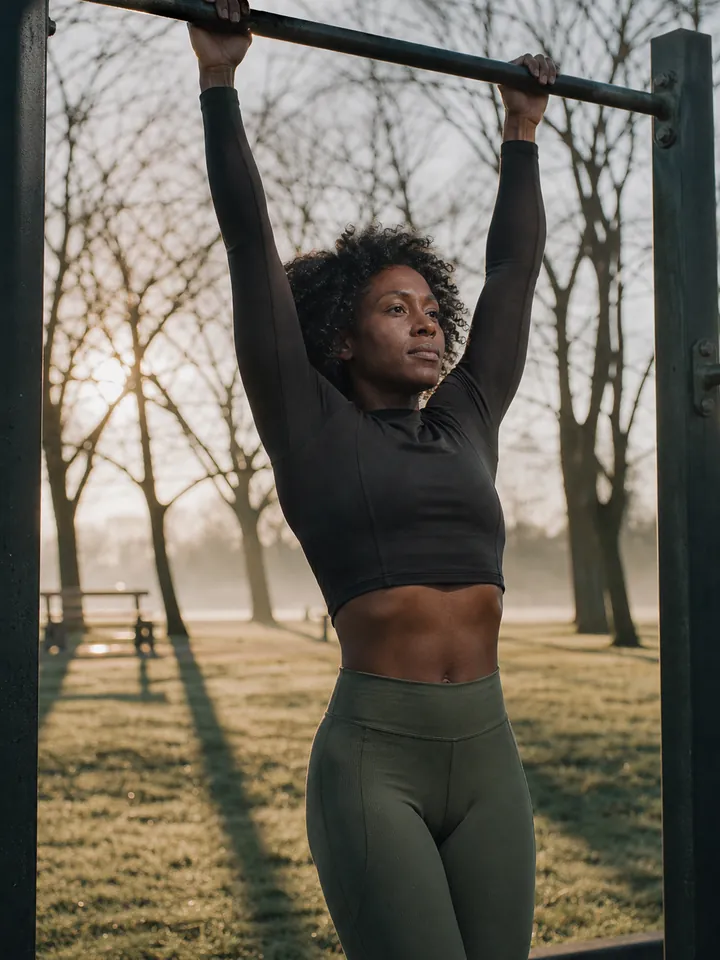
Турник в парке, туман и собственный вес вместо железа.
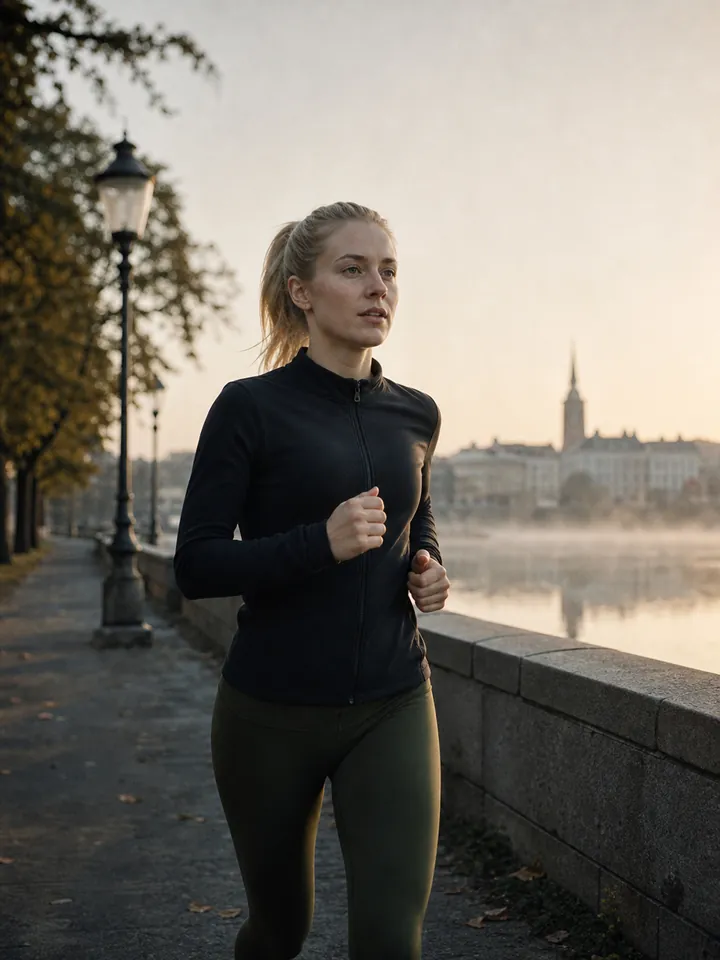
Набережная до моста и обратно. Дождь в прогнозе — не причина.
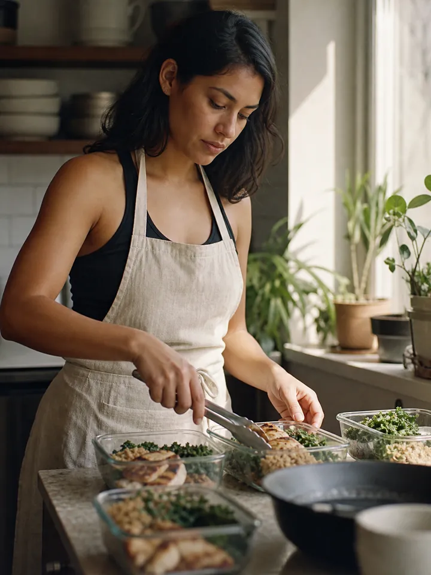
Готовит на пять дней вперёд и фотографирует не блюдо, а раскладку.
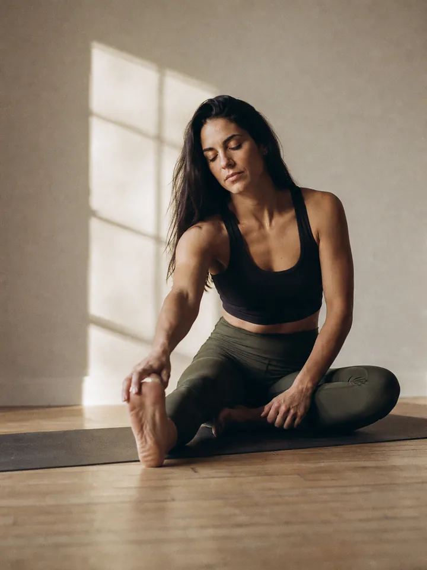
18 минут в день. Самая скучная колонка выпуска — и самая полезная.
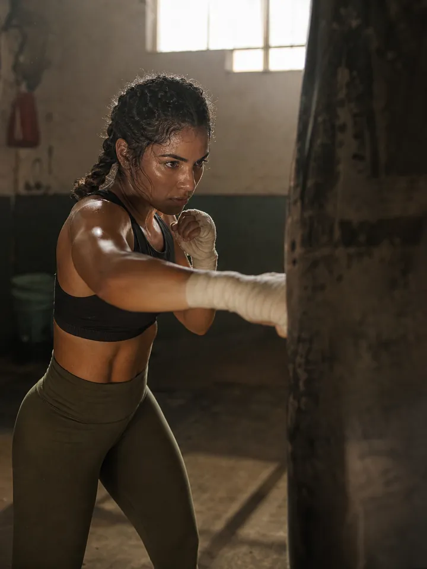
Мешок, скакалка, бинты. Раунды считает вслух — привычка с первого зала.
Длинные по 90 минут. Ведёт не километры, а часы под нагрузкой.
Плечи болят от зала — идут в воду. Дорожка №3, 06:30, всегда.
04 — Колонки
Один и тот же выпуск читается по-разному в зависимости от того, где у вас сейчас провал.
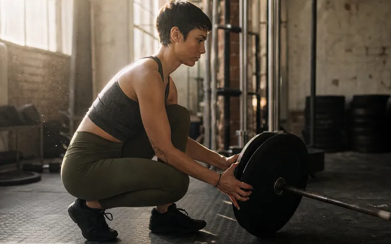
Программа недели и разбор техники от тренеров ростера. Что они реально делают — а не то, что выкладывают.
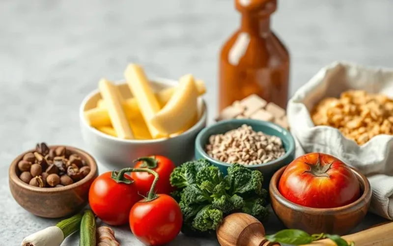
Еда, которая вписывается в реальный день: заготовка на пять дней, белок без порошка, ничего лишнего.
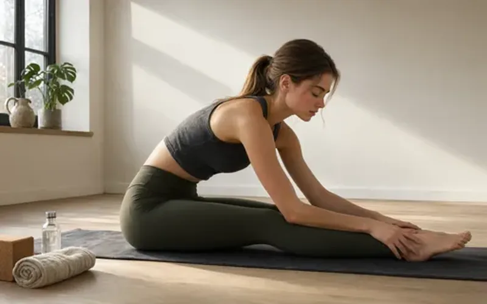
Сон, делоады и мобилити. Та часть, которую никто не публикует, — и та, что выигрывает сезон.
05 — Протокол
Одна страница, шесть строк. Данные вносятся вручную — это принципиальная часть метода.
| Показатель | Значение | Δ к прошлой |
|---|---|---|
| Сессия | Нижняя, тяжёлая · 42 мин | — |
| Тоннаж | 6 240 кг | ▲ +340 |
| Сон | 7 ч 40 мин | ▲ +25 мин |
| RPE | 7.5 / 10 | = 0 |
| Белок | 142 г | ✓ цель |
| Streak | 87 дней | ▲ +1 |
Пропуск не обнуляет стрик — он его останавливает. Возвращаемся на следующий день, без драмы и без «начну с понедельника».
Никаких приложений, которые считают за вас. Только цифры, которые вы вписали сами.
За 12 недель записи видно то, что не показывает ни одно зеркало: где именно вы срываетесь. Обычно это не тренировка — это четверг и сон.
06 — Индекс
В чём ростер реально тренируется — по дисциплинам, без партнёрских ссылок и без «промокодов».
Набор в выпуск №02
Двенадцать слотов в следующем выпуске. Ростер читается бесплатно — начните с одной записи сегодня и посмотрите, что будет к воскресенью.